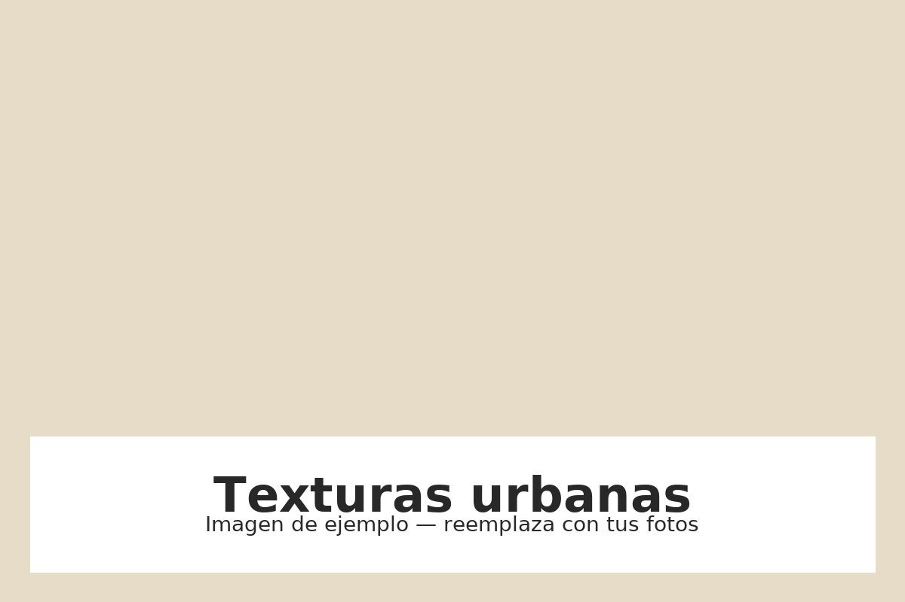
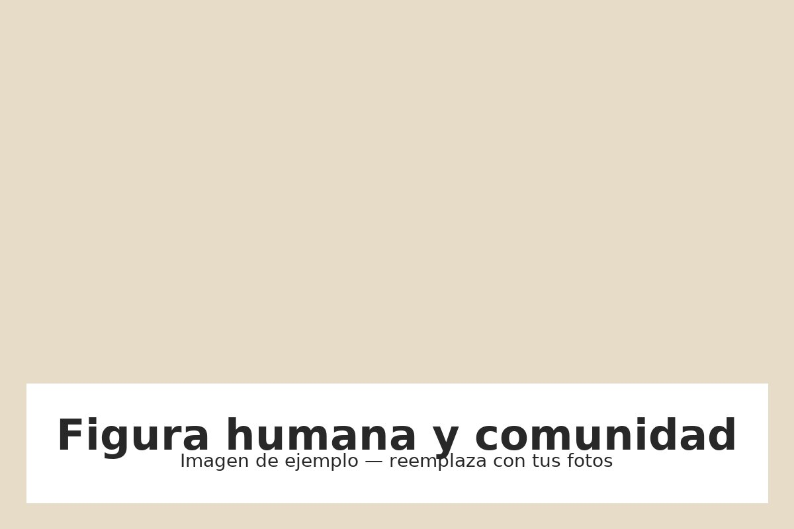
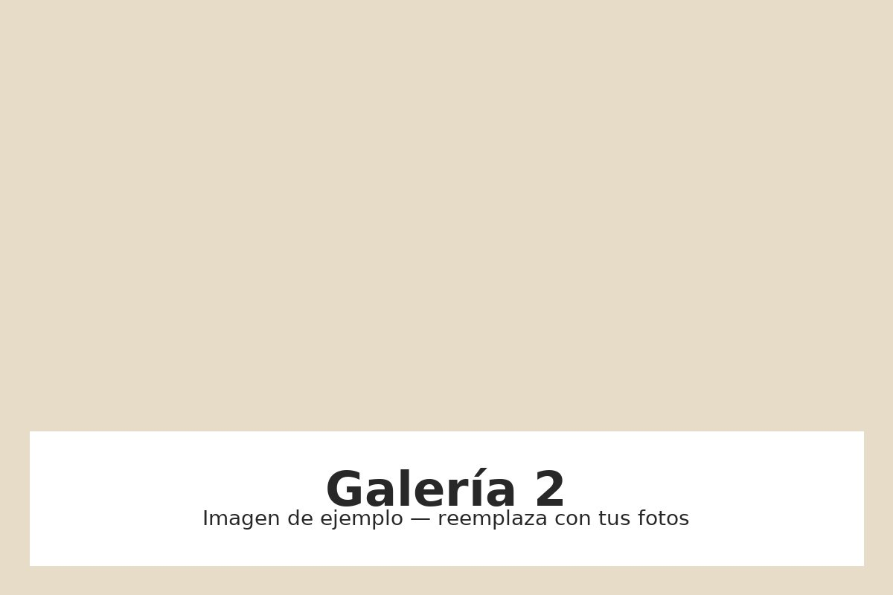
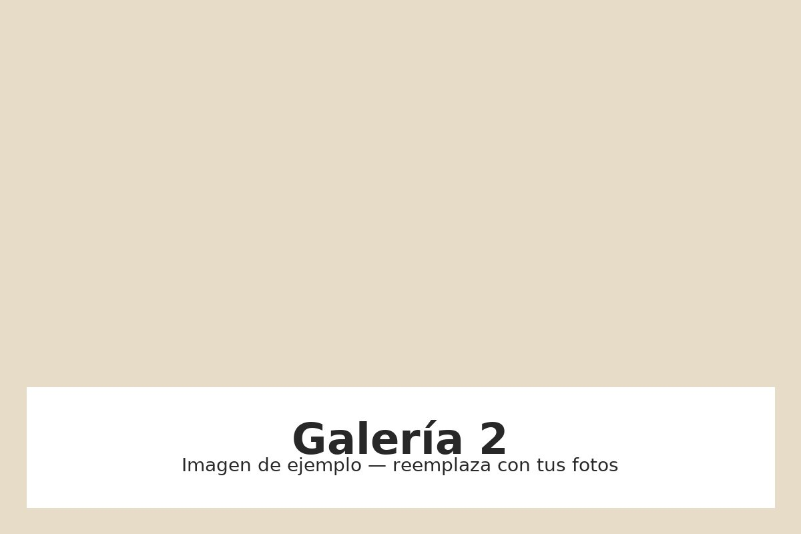

Ambiente diurno y luz natural
La experiencia diurna explora cómo la luz del día revela texturas, colores y detalles arquitectónicos: árboles, antejardines y fachadas cobran protagonismo.

Un recorrido por la historia viva del barrio Prado
Descubre las casonas, los murales y las historias que convergen en uno de los barrios más emblemáticos de La Candelaria. Este recorrido diurno propone mirar la ciudad con calma.
Ver recorridosEl barrio Prado fue concebido en las décadas de 1920 como uno de los primeros barrios residenciales planificados de Medellín. Su arquitectura mezcla estilos neoclásicos, republicanos y art déco, con fachadas ornamentales, ventanales y patios que narran la transformación urbana de la ciudad.
Hoy Prado convive con iniciativas culturales, galerías y proyectos comunitarios que buscan recuperar y reactivar su patrimonio.

La experiencia diurna explora cómo la luz del día revela texturas, colores y detalles arquitectónicos: árboles, antejardines y fachadas cobran protagonismo.
Materiales como piedra bogotana, madera y hierro forjado cuentan la historia constructiva del barrio.
Murales, galerías y fachadas intervenidas muestran la vitalidad creativa del barrio durante el día.

Las imágenes de vecinos, artistas y visitantes reafirman que Prado es un barrio vivo y compartido.
Duración: 2 horas · Punto de encuentro: Teatro Prado
Un recorrido por las casonas, los patios y los detalles arquitectónicos que dan identidad al barrio.
Duración: 1.5 horas · Punto de encuentro: Casa de la Cultura
Lecturas de textos y relatos que conectan la memoria del barrio con sus calles.
Este botón simula la descarga de una hoja informativa; reemplázalo con la ruta real a tu PDF o generación de QR.
 


Si quieres participar en el recorrido, inscribirte o contactar a los organizadores, completa el formulario:
Organiza: Distrito Candelaria · Colabora: Comunidad local
Créditos de diseño: Rodrigo Alberto Arango Arboleda — Universidad Católica Luis Amigó